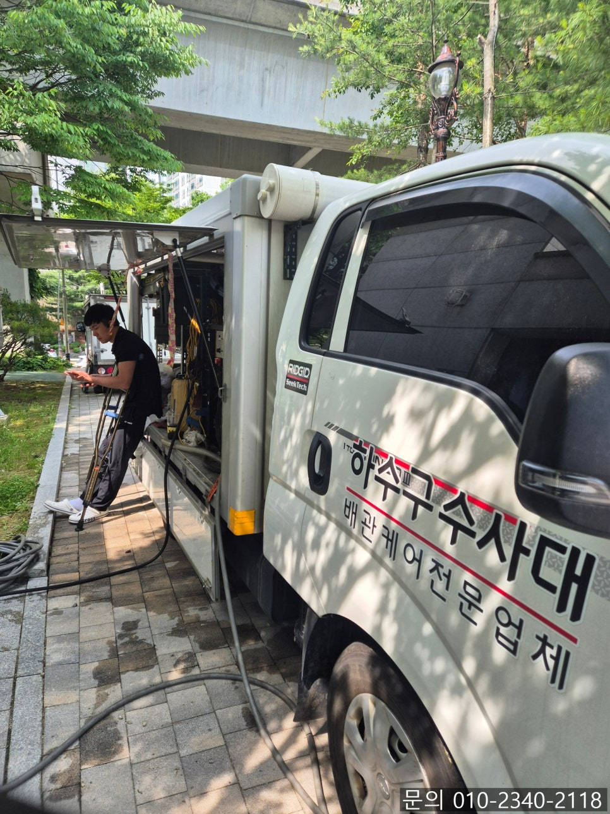
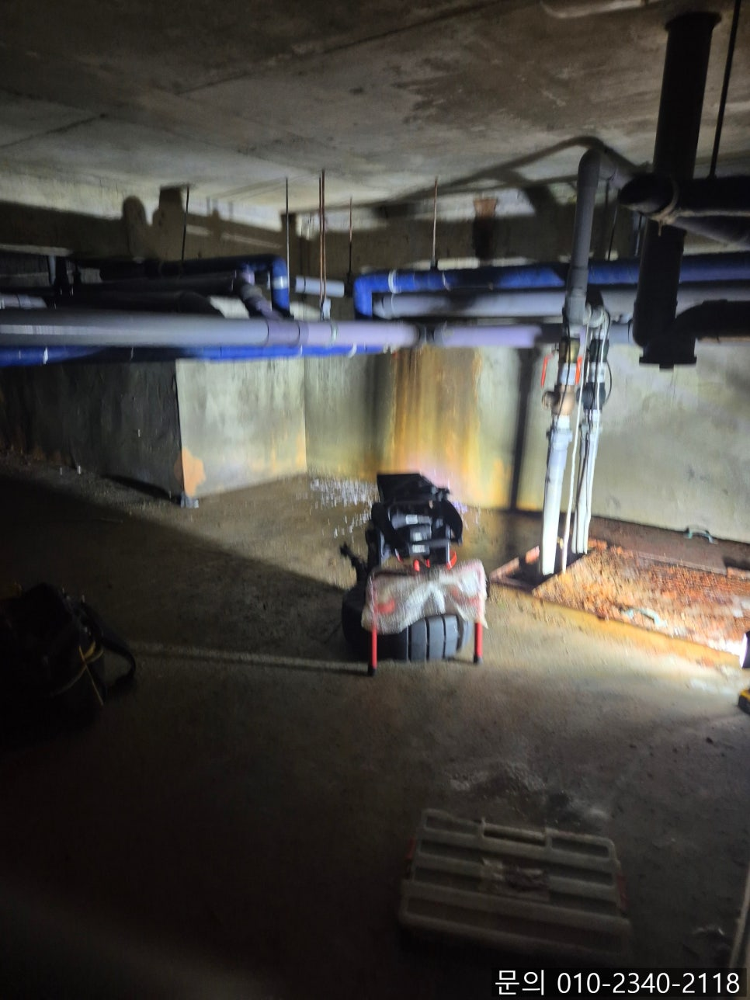
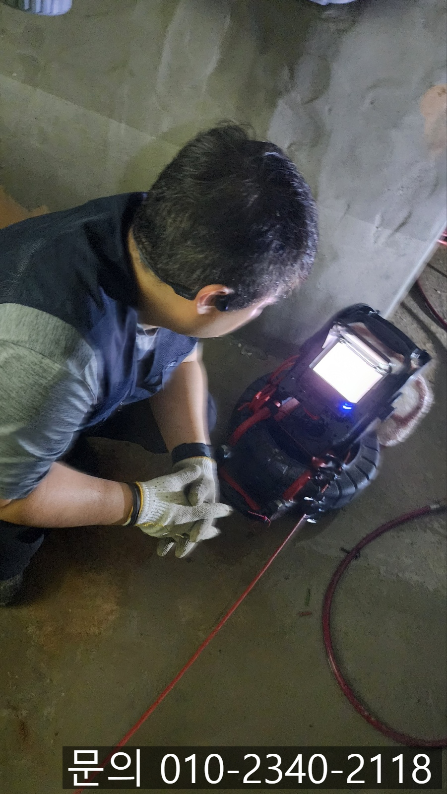
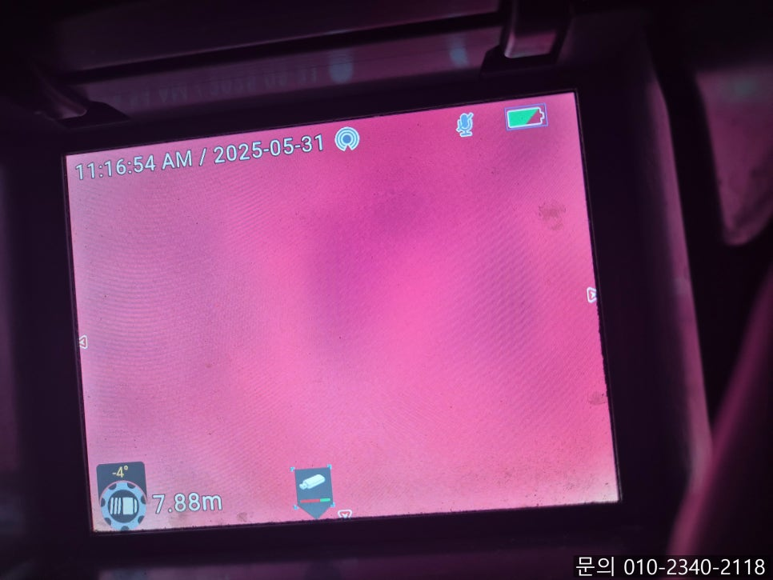
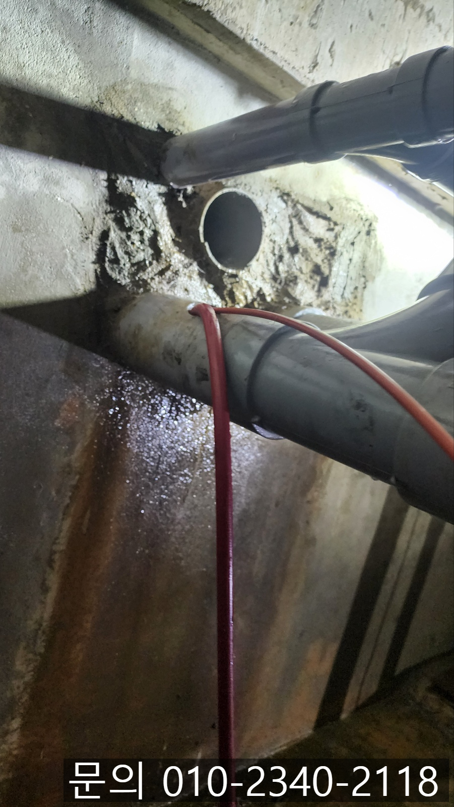
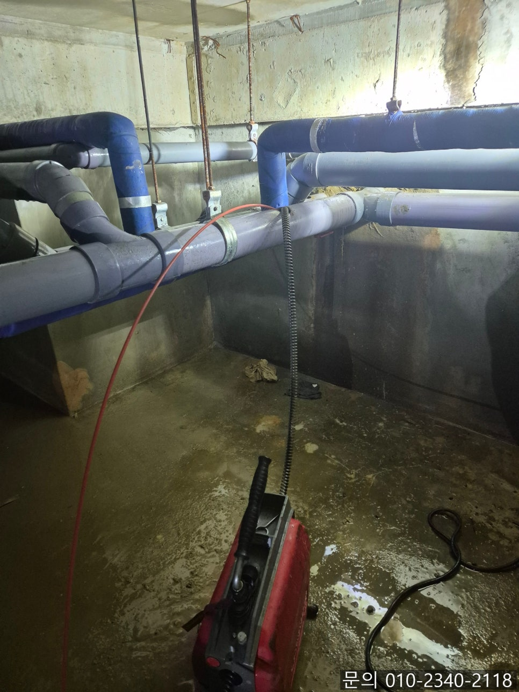

🏠 팽성읍 하수구 막힘 평택 안중읍 오수관 역류 뚫어주는 설비 업체
평택 변기막힘 전문 시공 후기

📋 작업 개요
- 위치: 평택
- 서비스 유형: 변기막힘, 하수구막힘, 배관막힘, 역류해결, 뚫는업체, 배관청소
- 작업 일시: 2025. 6. 4. 21:00
- 업체명: 하수구수사대 (010-5615-2118)
🔍 문제 상황
안녕하세요.
팽성읍 하수구 막힘, 평택 안중읍 오수관 역류 뚫어주는 설비 업체 하수구 다큐입니다.
건물 관리에 있어서 하수구 배관은 눈에 보이지 않는 영역이지만, 문제가 발생하게 되면 짧은 시간 가장 큰 피해를 발생하는 요소 중 하나입니다.
특히 많은 사람들이 이용하는 상가 건물의 화장실 하수구 막힘이 발생하게 되면 불편이 이만저만이 아니죠.
오수관 막힘의 원인은 굉장히 다양한데요.
첫 번째로 가장 자주 발생하는 원인은 변기에 집어넣은 이물질로 인한 막힘입니다.
많은 양의 휴지를 변기 안에 한꺼번에 넣고 물을 내린다거나, 물에 녹지 않는 물티슈나 생리대를 넣어 막히는 경우들이 많아요.

🔎 원인 분석
💡 전문가 진단: 정밀 진단 장비를 사용하여 슬러지의 고착 여부를 판명하고 타격/세척 작업을 실시했습니다.
특히 오늘 소개해 드릴 팽성읍 하수구 막힘 현장처럼 상가 건물에 있는 화장실의 경우 내 집처럼 깔끔하게 사용하지 않다 보니 앞서 말씀드린 이물질, 각종 쓰레기 등으로 인해 막히는 경우가 많을 수밖에 없습니다.
두 번째로 배관 파손이 된 경우인데요.
배관의 경우 시간이 지나면서 약해지고 부식되기도 하다 보니 깨지거나 갈라져 파손되는 경우 이물질이 쌓이면서 막힘이 발생할 수 있어요.
며칠 전, 팽성읍 하수구 막힘으로 건물 관리인으로부터 연락을 받았습니다.
지하에서 냄새가 너무 심하게 올라오고, 화장실 물도 안 내려가고 역류한다며 배관에 문제가 생긴 것 같다는 전화였어요.
팽성읍 하수구 막힘 현장에 도착하자마자 느껴지는 지하실 특유의 눅눅한 공기와 심각한 악취가 진동하고 있었습니다.
평택 안중읍 오수관 역류 뚫어주는 설비 업체 하수구 다큐는 내시경 카메라를 진입시켜 막힘의 원인을 파악해 보기로 했습니다.

🔧 작업 과정
평택 안중읍 오수관 역류 뚫어주는 설비 업체 하수구 다큐가 내시경 카메라를 진입시키자 기름 슬러지와 각종 이물질이 배관에 쌓인 상태로 내부의 모습은 제대로 보이지 않고 조명에 반사되어 빨간 화면을 확인할 수 있었어요.
건물 전체의 오수관이 하나의 메인 배관으로 모이게 되는데요. 그 중간 지점에서 막힘이 발생한 상황으로 파악되었습니다.
고객님께 현재 건물 배관의 상황을 설명해 드리고 작업 계획과 발생되는 비용 등에 대해 자세히 안내해 드린 다음 배관 청소를 진행하기로 했습니다.
전동 스프링을 이용해 작업을 시작하자 오래 지나지 않아 물구멍이 뚫리면서 통수가 시작되자 배관 내부의 형태를 파악할 수 있었어요.
고여있던 물이 빠져나가자 배관에 쌓인 이물질을 확인할 수 있었고, 제거하는 작업을 이어가는 도중 배관이 파손된 것을 확인할 수 있었습니다.
배관이 파손되는 경우가 흔히 발생되는 일은 아니다 보니 고객님께 직접 확인 시켜드리고 추가 작업에 대해 설명해 드렸어요.
배관이 파손된 경우에 쌓인 이물질만 제거한다고 해서 문제가 해결되지 않습니다.
파손된 부분을 잘라내고 흘러가는 물이 새어 나오지 않도록 새로운 배관을 이용해 잘 연결해 줘야 합니다.
하수구 다큐는 구비하고 있던 배관을 사용해 파손된 부분을 제거한 다음 이어주는 작업을 진행해 드렸어요.
배관 연결 작업까지 마친 다음 물을 틀어 다른 문제는 없는지 꼼꼼하게 테스트까지 진행한 다음 작업을 마무리할 수 있었습니다.
하수구 막힘의 경우 이물질로 인해 발생하는 경우가 많지만 오늘 현장처럼 배관 파손이나 다른 이유로 인해 발생하는 경우도 있습니다.


✅ 작업 완료
하수구 다큐는 다양한 현장 경험을 바탕으로 쌓은 노하우를 이용해 어떤 현장이던 정확한 원인을 찾아 해결해 드리고 있습니다.
지금 하수구 막힘으로 고민하고 계신다면 하수구 다큐와 함께 해결해 보세요.
경기도 평택시 고덕중앙로 322 4층 129호




⚠️ 하수구 배관 막힘 예방 및 관리 가이드
- ✅ 머리카락, 비닐, 물티슈 등 물에 분해되지 않는 이물질은 하수구 유입을 절대 금지해 주세요.
- ✅ 하수구 거름망을 씌우고 모여진 이물질은 주기적으로 쓰레기통에 바로 비워주셔야 합니다.
- ✅ 배관 노후가 심할 경우 이물질이 더 쉽게 걸리므로 주기적인 배관 세척(고압세척 등)을 권장합니다.
- ✅ 작업 후 1년 이내 재발 시 하수구수사대에서 무상 A/S 보증 서비스를 제공합니다.
💡 핵심 정리
- 확실한 장비 작업(내시경 점검 및 샤프트 스케일링)으로 원인을 뿌리 뽑습니다.
- 작업 후 1년 이내에 동일한 부위 재발 시 100% 무상 A/S 서비스를 보장합니다.
- 서울 · 경기 · 인천 전 지역에 24시간 언제든 긴급 출동할 수 있도록 항시 대기 중입니다.
❓ 자주 묻는 질문 (FAQ)
🚨 평택 변기막힘 문제로 고민이신가요?
정확한 원인 진단과 확실한 시공으로 재발 없는 해결을 약속드립니다.
24시간 긴급 출동 | 서울 · 경기 · 인천 전지역 | 1년 내 재발 시 무상 A/S